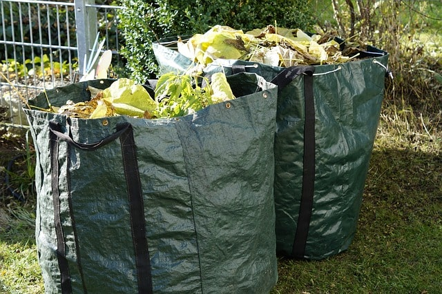

There is no job too big or too small and no grass is too high, we have the machinery to do the job.
We endeavour to offer a personalised lawn and garden maintenance service while providing high quality
workmanship and professionalism in every job we do. Having your lawn cut on a regular schedule,
especially during the Summer will maintain the health of your lawn over the long run.
We are professionals in scarification and aeration which can greatly improve the quality of your lawn.
The process of lawn scarification involves raking or scraping the lawn at just below the surface of of the lawn with
the aim being to remove excess thatch and moss and therefore free up space for better grass growth.
Aeration involves perforating the soil with small holes to allow air, water and nutrients to penetrate into the ground
and down to the grass roots which then helps the roots grow deeply and produce a stronger, more vigorous and lush lawn.

We also carry out garden maintenance and cleanups with garden waste taken away upon request. We handle waste collection in
an environmentally friendly and professional manner. We have prices to suit all budgets. Our garden clearance services include
pruning, pulling and removal of weeds and dead plants, removal of plants and bushes no longer wanted, and any other work requested
work to tidy your garden.